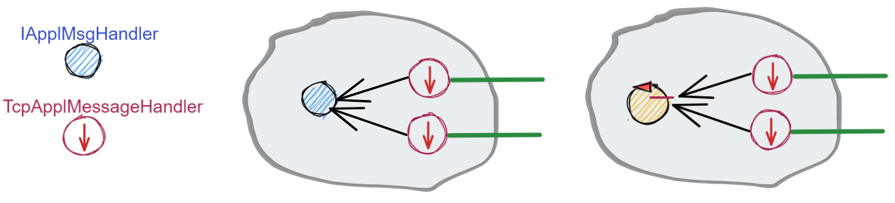

Attori¶
Al termine de Lo SPRINT4 abbiamo costruito un sistema la cui architettura è basata sul seguente schema-base:

Come conseguenza, risulta possibile che lo stesso componente applicativo di tipo IApplMsgHandler possa essere utilizzato da due o più clienti remoti.
I casi di studio introdotto in Sprint4: esperimenti pongono in evidenza comportamenti erronei che potrebbero derivare da questa condivisione e la difficoltà di concepire test unit in grado di fare emergere le situazioni che li generano.
Non merviglia che, per evitare alla radice il problema, molti propongano di vincolare i componenti applicativi ad un modello di Programmazione funzionale, privandoli di uno stato interno modificabile.
Abbiamo però anche osservato che la trasformazione di un componente applicativo da POJO ad Attore potrebbe evitare questo vincolo, sostituendo alla interazione basata su procedure-call una interazione basata sullo scambio di messaggi.
{kind=link}
In questo modo, il ‘macro-mondo’ rappresentato dalla applicazioni distribuite di rete in cui macro-componenti (servizi) interagiscono a messaggi, troverebbe una corrispondenza anche a livello del ‘micro-mondo’ rappresentato dalla interazioni tra i componenti interni ai servizi. Questa uniformità concettuale introduce di fatto un nuovo Paradigma di programmazione.
Il paradigma ad Attori¶
Secondo Carl Hewitt (uno dei padri fondatori) il modello dell’attore è stato ispirato, a differenza dei precedenti modelli di calcolo, dalla fisica , inclusa la relatività generale e la meccanica quantistica.
Vi è oggi una ampia gamma di proposte di linguaggi / librerie ad attori, tra cui:
Akka : ispirato a Modello computazionale ad attori di Hewitt. Per le motivazioni si veda Akka actors.
GO : ispirato a CSP propone goroutine e CanaliGO. Per la documentazione si veda GO doc.
Kotlin actors : propone croutines e channels (si veda Kotlin channel)
Un motto di riferimento alquanto significativo per questo modello è il seguente:
Do not communicate by sharing memory; instead, share memory by communicating.
Nel nostro modello computazionale, un attore presenta le seguenti proprietà:
ha un nome univoco nell’ambito di tutto il sistema;
è logicamente attivo, cioè dotato di flusso di controllo autonomo;
nasce, vive e muore in un contesto che può essere comune a (molti) altri attori;
è capace di inviare messaggi ad un altro attore, di cui conosce il nome, incluso sè stesso;
è capace di eseguire elaborazioni autonome o elaborazioni di messaggi;
è dotato di una sua coda locale in cui sono depositati i messaggi inviategli da altri attori (o da sè stesso) quando i messaggi arrivano mentre l’attore è impegnato in una fase di elaborazione;
elabora i messaggi ricevuti uno alla volta, prelevandoli dalla sua coda in modo FIFO.
Possiamo pensare che questo modello di attore sia realizzato in Java con un Thread e una BlokingQueue, ma motivi di efficienza ci porteranno ad utilizzare le coroutines e i channel di Kotlin.

ActorQak e QakActor22¶
Nel seguito, per evitare confusioni, useremo i segenti termini:
ActorQak: per indicare gli attori implementati in Kotlin dalla libreria
it.unibo.qakactor-2.7.jarrealizzata in anni passati;QakActor22: per indicare gli attori che useremo in questa fase del nostro percorso, all’interno di normali programmi Java, utilizzando classi appositamente definite nel progetto
unibo.actor22:QakActor22.java : classe astratta che specializza la classe-base (
ActorBasic.kt) degliActorQakper agevolare l’uso degliQakActor22nell’ambito di applicazioni Java;Qak22Util.java : classe che fornisce metodi static di utilità per l’uso di attori
QakActor22;Qak22Context.java : classe che realizza il contesto in cui vivono gli attori.
Grazie a queste classi potremo usare gli attori QakActor22 senza dovere, al momento, conoscere Kotlin.
Ovviamente, in una fase successiva cercheremo di operare avvaledoci direttamnte di Kotlin.
Per introdurci all’uso degli attori QakActor22, vediamo come definire ed usare un attore relativo al Led.
LedActor¶
Un attore relativo al Led è un componente attivo che specializza la classe astratta QakActor22.
public class LedActor extends QakActor22{
private ILed led;
public LedActor(String name) {
super(name);
led = DeviceFactory.createLed();
}
Il dispositivo di tipo ILed gestito dal core-code (si veda Il concetto di ‘oggetto enabler’) viene incapsulato (embedded) all’interno dell’attore.
QakActor22: il costruttore¶
Al momento della creazione del LedActor viene invocato il costruttore definito in QakActor22 che aggiunge l’attore al contesto,
controllando che non ce ne sia già un altro con lo stesso nome.
public QakActor22(@NotNull String name ) {
super(name, QakContext.Companion.createScope(),false,true,false,50);
if( Qak22Context.getActor(name) == null ) {
Qak22Context.addActor( this );
}
else ColorsOut.outerr("QakActor22 | actor "+name+"already exists");
}
Qak22Context¶
La classe che realizza il contesto degli attori QakActor22 mantiene memoria di tutti gli attori
creati attraverso una
tabella (ctxMap) che associa il nome dell’attore al suo riferimento in quanto oggetto Java.
public class Qak22Context {
private static HashMap<String,QakActor22> ctxMap =
new HashMap<String,QakActor22>();
QakActor22: getActor¶
Il metodo getActor restituisce il riferimento all’oggetto che implementa l’attore, dato il suo nome.
public static QakActor22 getActor(String actorName) {
return ctxMap.get(actorName);
}
QakActor22: handleMsg¶
La classe QakActor22 è astratta in quanto lascia alle classi specilizzate il compito di definire il metodo handleMsg
con cui un attore applicativo gestisce (interpretandoli) comandi e richieste di tipo it.unibo.kactor.IApplMessage.
Si noti che l’interfaccia IApplMessage è ora definita nel package it.unibo.kactor della libreria it.unibo.qakactor-2.7.jar,
così da riutilizzare il codice già sviluppato negli anni scorsi.
LedActor: handleMsg¶
Nel caso del Led possiamo scrivere handleMsg come segue:
@Override
protected void handleMsg(IApplMessage msg) {
if( msg.isRequest() ) elabRequest(msg);
else elabCommand(msg);
}
Il metodo handleMsg viene invocato dalla infrastruttura di supporto quando (almeno) un messaggio è disponibile nella
coda di ingresso associata all’attore.
Nella implementazione attuale:
Tutti gli attori sono eseguiti all’interno di uno stesso Thread Java
LedActor: esecuzione di comandi¶
L’elaborazione dei comandi è analoga a quanto fatto in LedApplHandler; in questa versione rinunciamo, per semplicità, alla introduzione di un LedApplInterpreter esplicito.
protected void elabCmd(IApplMessage msg) {
String msgCmd = msg.msgContent();
switch( msgCmd ) {
case ApplData.comdLedon : led.turnOn();break;
case ApplData.comdLedoff : led.turnOff();break;
default: ColorsOut.outerr(getName() + " | unknown " + msgCmd);
}
}
La classe ApplData¶
Notiamo il ruolo importante della classe di livello applicativo ApplData che raccoglie le definizioni dei nomi e
dei principali messaggi.
public static final String ledName = "led";
public static final String controllerName = "controller";
public static final String comdLedon = "turnOn";
public static final String comdLedoff = "turnOff";
public static final String reqLedState = "getState";
public static final IApplMessage turnOnLed =
buildDispatch(controllerName, "cmd", comdLedon, ledName);
public static final IApplMessage turnOffLed =
buildDispatch(controllerName, "cmd", comdLedoff, ledName);
...
//msg(MSGID,MSGTYPE,SENDER,RECEIVER,CONTENT,SEQNUM)
private static int msgNum=0;
public static IApplMessage buildDispatch(
String sender, String msgId, String payload, String dest){ ... }
...
public static IApplMessage prepareReply(
IApplMessage requestMsg, String answer) { ... }
LedActor: esecuzione di richieste¶
L’elaborazione delle richieste è ancora del tutto simile a quanto fatto in LedApplHandler
protected void elabRequest(IApplMessage msg) {
String msgReq = msg.msgContent();
switch( msgReq ) {
case ApplData.reqLedState:{
boolean b = led.getState();
IApplMessage reply = MsgUtil.buildReply(getName(),
ApplData.reqLedState, ""+b, msg.msgSender());
sendReply(msg, reply );
break;
}
default: ColorsOut.outerr(getName() + " | unknown " + msgReq);
}
}
Richieste asincrone¶
Fino ad ora, le nostre infrastrutture realizzano richieste in modo bloccante (sincrono), cioè fermano il processo chiamante in attesa della risposta sulla connessione su cui aveva fatto la richiesta.
Ora invece:
Nel modello ad attori le richieste sono asincrone
In altre parole, l’invio di una richiesta non implica la attesa immediata di una risposta, ma solo l’aspettativa di ricevere una risposta relativa a qualle richiesta (si veda Il problema delle risposte).
Un attore deve quindi aspettarsi di ricevere (e di gestire) in modo esplicito messaggi di risposta che vengano depositati sulla sua coda di input.
QakActor22: sendReply¶
Il metodo sendReply usato dal Led per inviare la risposta alla richiesta getState,
viene ereditato dalla classe QakActor22 e viene definito come segue:
protected void sendReply(IApplMessage msg, IApplMessage reply) {
QakActor22 dest = Qak22Context.getActor( msg.msgSender() );
if(dest != null) dest.queueMsg( reply ); //(1)
else replyToRemoteCaller(msg,reply)
}
Quando sendReply non riesce a trovare il sender della richiesta nel contesto, vuol dire che il
sender è un attore non locale. Vedremo più avanti come
definire il metodo replyToRemoteCaller.
In questa fase, approfondiamo invece i meccanismi relativi all’invio di un messaggio ad un attore locale, di cui abbiamo un esempio alla linea (1) .
QakActor22: invio di messaggi¶
L’invio di un messaggio (comando o richiesta) ad un attore come LedActor può avvenire in due modi:
da parte di un normale programma Java
da parte di un altro attore
Invio di messaggi da non-attori¶
Un programma Java può inviare messaggi ad un attore attraverso il metodo sendAMsg
definito nella classe Qak22Util
public static void sendAMsg( IApplMessage msg ){
sendAMsg( msg, msg.msgReceiver() );
}
Ad esempio, per accendere il Led, un programma può eseguire:
Qak22Util.sendAMsg( ApplData.turnOnLed );
Il parametro è uno solo perchè il messaggio, se non reppresenta un evento (si veda Eventi), contiene il nome del destinatario.
Qak22Util.sendAMsg¶
L’operazione sendAMsg a due argomenti verrà illustrata più avanti (si veda sendAMsg).
UsingLedNoControllerOnPc¶
Esempi di questo tipo si trovano in UsingLedNoControllerOnPc del package unibo.actor22.local
(directory test del progetto unibo.actor22).
Invio di richieste da programma¶
L’invio di un messaggio di richiesta ad un attore da parte di normale codice Java è possibile:
il sender potrebbe avere un nome qualsiasi (ad esempio main), e la richiesta viene eseguita,
ma il messaggio di risposta non trova alcun attore destinatario e quindi genera un segnale di errore.
Invio di messaggi da attore¶
Ogni attore possiede ‘geneticamente’ non solo la capacità di ricevere messaggi, ma anche la capacità di inviarli.
A questo fine, la classe QakActor22 definisce il seguente metodo:
protected void sendMsg( IApplMessage msg ) {
String destActorName = msg.msgReceiver();
QakActor22 dest = Qak22Context.getActor(destActorName);
if( dest != null ) dest.queueMsg(msg); //attore locale
else sendMsgToRemoteActor(msg); //attore non locale
}
Il metodo sendMsgToRemoteActor che implementa la comunicazione con attori non locali verrà introdotto
quando ci occuperemo di attori distribuiti.
Il metodo queueMsg¶
Dovendo inviare un messaggio ad un attorie locale, siamo in grado di avere un riferimento all’aggetto Java
che rappresenta l’attore e quindi possiamo invocarne il metodo queueMsg che inserisce il messaggio
nella coda di ingresso dell’attore.
protected void queueMsg(IApplMessage msg) {
...
}
La implementazione del metodo queueMsg prevede l’uso di canali e coroutines Kotlin. Ne rimandiamo quindi
la descrizione a quando esamineremo i dettagli della implementazione Kotlin.
Metodi di invio messaggi¶
Dal punto di vista dell’Application Designer, il metodo sendMsg può anche essere ignorato,
in quanto QakActor22 definisce metodi di invio messaggi al giusto livello di astrazione applicativo:
protected void forward( IApplMessage msg ){
if( msg.isDispatch() ) sendMsg( msg );
else ColorsOut.outerr("QakActor22 | forward requires a dispatch");
}
protected void request( IApplMessage msg ){
if( msg.isRequest() ) sendMsg( msg );
else ColorsOut.outerr("QakActor22 | forward requires a request");
}
autoMsg¶
Se un attore vuole inviare un messaggio a sè stesso, può utilizzare il metodo autoMsg:
protected void autoMsg( IApplMessage msg ){
if( msg.msgReceiver().equals( getName() )) sendMsg( msg );
else ColorsOut.outerr("QakActor22 | autoMsg wrong receiver");
}
UsingLedAndControllerOnPc¶
Il programma UsingLedAndControllerOnPc del package unibo.actor22.local (directory test del progetto unibo.actor22)
relaiiza il sistema rappresentato nella figura che segue, costituito da un attore Controller che invia
comandi e richieste a un attore Led.
{kind=link}
La configurazione del sistema si riduce alla creazione dei due attori, mentre l’esecuzione si attiva inviando un dispatch al Controller:
protected void configure() {
new LedActor( ApplData.ledName );
new ControllerActor( ApplData.controllerName );
}
protected void execute() {
Qak22Util.sendAMsg( ApplData.activateCrtl );
}
Per comprendere (e poi progettare) il comportamento del sistema, si tenga conto dei seguenti vincoli:
Tutti gli attori vengono eseguiti all’interno di un unico Thread
Pertanto, affinchè ogni attore possa essere eseguito e affinchè un attore possa elaborare un altro messaggio:
Un attore deve cedere il controllo
In altre parole, solo quando il metodo handleMsg termina restituendo il controllo alla infrastruttura che lo ha invocato, si apre la possibilità che altri attori possano essere eseguiti e che l’attore stesso possa elaborare un altro messaggio.
ControllerActor¶
Al momento della costruzione, ControllerActor prepara un messaggio di richiesta sullo stato del Led
public class ControllerActor extends QakActor22{
protected int numIter = 0;
protected IApplMessage getStateRequest ;
public ControllerActor(String name ) {
super(name);
getStateRequest = ApplData.buildRequest(name,"ask",
ApplData.reqLedState, ApplData.ledName);
}
La gestione dei messaggi del ControllerActor riguarda i seguenti messaggi:
il comando di attivazione
ApplData.activateCrtlla risposta all sua richiesta al Led sullo stato
@Override
protected void handleMsg(IApplMessage msg) {
if( msg.isReply() ) elabAnswer(msg);
else elabCmd(msg) ;
}
protected void elabCmd(IApplMessage msg) {
String msgCmd = msg.msgContent();
switch( msgCmd ) {
case ApplData.cmdActivate : {
doControllerWork();
break;
}
default:break;
}
}
ControllerActor: comportamento¶
Alla ricezione del messaggio di attivazione, il ControllerActor esegue il primo passo della sua BusinessLogic
inviando al Led un comando di accensione o spegnimento
seguito da una richiesta sullo stato del Led; poi cede il controllo.
protected void doControllerWork() {
if( numIter++ < 5 ) {
if( numIter%2 == 1) forward( ApplData.turnOnLed ); //accesione
else forward( ApplData.turnOffLed ); //spegnimento
request(getStateRequest);
}else forward( ApplData.turnOffLed );
}
All’arrivo della risposta del Led, il ControllerActor esegue un altro passo della sua BusinessLogic:
protected void elabAnswer(IApplMessage msg) {
CommUtils.delay(500);
doControllerWork();
}
WORKTODO: riprogettare il sistema inserendo un SonarActor
Dal locale al distribuito¶
Ora che abbiamo esplorato i meccanismi-base del modello ad attori in ambiente locale, poniamoci il problema di distribuire gli attori in nodi diversi.

Un sistema distribuito è di norma formato da due o più contesti, ciascuno dei quali:
opera su un nodo di elaborazione associato a un indirizzo IP;
utilizza almeno un protocollo di comunicazione (tra cui sempre TCP) per ricevere messaggi su una data porta di ingresso (che potrebbe assumere la forma di un URI, come anticipato in entryPort);
conosce tutti gli altri contesti del sistema e la dislocazione di ogni attore nei diversi contesti, distinguendo gli attori in due categorie: locali (a sè) e remoti (allocati in altri contesti);
implementa l’invio di un messaggio da parte di un attore locale
aad un attore NON localebavvaledosi della sua conoscenza sulla dislocazione degli attori nel sistema e del protocollo di comunicazione usato dal contesto dib;implementa la ricezione di un messaggio utilizzando il nome del destinatario.
QakContext: setActorAsRemote¶
In questa fase, la conoscenza sulla dislocazione degli attori non locali viene ‘iniettata’ in un contesto
dal livello applicativo, attraverso il metodo setActorAsRemote.
Vedremo in seguito (in Configurare con Annotation
e in Actors22) forme più evolute di dichiarazione basate su Annotazioni.
public class Qak22Context {
private static HashMap<String,QakActor22> ctxMap = new HashMap<String,QakActor22>();
private static HashMap<String,ProxyAsClient> proxyMap = new HashMap<String,ProxyAsClient>();
public static void setActorAsRemote(
String actorName, String entry, String host, ProtocolType protocol ) {
ProxyAsClient pxy = proxyMap.get(host+"Pxy");
if( pxy == null ) { //un solo proxy per contesto remoto
pxy = new ProxyAsClient(host+"Pxy", host, entry, protocol);
proxyMap.put(host+"Pxy", pxy);
}
proxyMap.put(actorName, pxy); //memo il proxy per l'attore
}
La classe Qak22Context definisce ora anche tabella (proxyMap) che tiene memoria
dei proxy ai contesti remoti.
Per l’attore non locale il cui nome è dato come input a setActorAsRemote, viene costruito (se non già creato)
un proxy per il nodo (contesto) remoto indicato dal parametro host .
Viene creato un solo proxy per ogni contesto remoto
Package unibo.actor22Comm¶
In questo package inseriamo la realizzazione una nuova versione del concetto di contesto introdotto in Contesti-contenitori tenendo conto di quanto già fatto nello Sprint4 e dei seguenti punti:
il codice dipende dalla libreria it.unibo.qakactor-2.7 e viene distribuito nella libreria unibo.actor22-1.1.jar;
l’astrazione connessione viene definita come una estensione di quanto introdotto (IConnInteraction) nel supporto agli attori ActorQak:
public interface Interaction2021 extends //from uniboInterfaces.jar it.unibo.is.interfaces.protocols.IConnInteraction { public void forward( String msg ) throws Exception; public String request( String msg ) throws Exception; public void reply( String reqid ) throws Exception; public String receiveMsg( ) throws Exception ; public void close( ) throws Exception; }
il contesto è realizzato come un EnablerContext che attiva una elaborazione di sistema dei messaggi in ingresso , grazie ad una nuova versione del ContextMsgHandler specializzata per gli attori;
ContextMsgHandler per attori¶
Il nuovo gestore di sistema dei messaggi non memorizza più (riferimenti a) POJO di tipo IApplMsgHandler, ma si avvale di Qak22Context per reindirizzare i messaggi agli attori QakActor22 locali al nodo:
public class ContextMsgHandler
extends ApplMsgHandler implements IApplMsgHandler{
@Override
public void elaborate( IApplMessage msg, Interaction2021 conn ) {
if( msg.isRequest() ) elabRequest(msg,conn);
else elabNonRequest(msg,conn);
}
protected void elabNonRequest( IApplMessage msg, Interaction2021 conn ) {
QakActor22 a = Qak22Context.getActor( msg.msgReceiver());
if( a != null ) Qak22Util.sendAMsg( msg );
else ColorsOut.outerr(name + " | I should not be here .. "+msg.msgReceiver());
}
Notiamo che per i messaggi di richiesta viene invocato un metodo diverso dalla gestione di tutti gli altri tipi di messggio (dispatch e reply). Ciò in quanto si vuole dare alla infrastruttura anche il compito di inviare al mittente la risposta prodotta dall’attore destinatario a livello applicativo.
Gestione di richieste¶
Se un messaggio pervenuto è una richiesta, il gestore di sistema dei messaggi predispone un attore temporaneo capace di ricevere il messaggio di risposta prodotto dall’attore destinatario e inviarlo all’attore richiedente:
protected void elabRequest( IApplMessage msg, Interaction2021 conn ) {
String senderName = msg.msgSender();
String actorRepyName = Qak22Context.actorReplyPrefix+senderName;
if( Qak22Context.getActor(actorRepyName) == null ) { //non esiste già
new ActorForReply(actorRepyName, this, conn);
}
elabNonRequest(msg,conn);
}
Il nome dell’attore temporaneo ha un prefisso constante definito in Qak22Context.actorReplyPrefix
seguito dal nome del destinatario.
ActorForReply¶
L’attore (dinamicamente creato) che gestisce l’invio di una risposta all’attore remoto attende che il livello applicativo produca il messaggio di risposta e poi lo invia sulla connessione ricevuta. Quindi si auto-elimina dal sistema.
public class ActorForReply extends QakActor22{
private IApplMsgHandler h;
private Interaction2021 conn;
public ActorForReply(String name,
IApplMsgHandler h, Interaction2021 conn) {
super(name);
this.h = h;
this.conn = conn;
}
@Override
protected void handleMsg(IApplMessage msg) {
if( msg.isReply() ) h.sendAnswerToClient(msg.toString(), conn);
Qak22Context.removeActor(this);
}
}
L’attore ad hoc per l’invio di una risposta assume il ruolo di proxy verso il contesto dell’attore remoto che ha inviato la richiesta.
Invio di messaggi ad attori remoti¶
Per inviare un messaggio (dispatch, request, reply) ad un attore remoto dest ci si avvale del Proxy al contesto
di dest, creato dalla operazione QakContext: setActorAsRemote.
sendMsgToRemoteActor¶
Il metodo sendMsgFromActor di QakActor22 introdotto in precedenza può quindi essere completato come segue:
protected void sendMsgToRemoteActor( IApplMessage msg ) {
String destActorName = msg.msgReceiver();
ProxyAsClient pxy = Qak22Context.getProxy(destActorName);
if( pxy == null ) {
ColorsOut.outerr("Perhaps no setActorAsRemote for " + destActorName );
return;
}
pxy.sendMsgOnConnection(msg.toString());
}
ProxyAsClient in actor22comm¶
La classe ProxyAsClient del package unibo.actor22comm.proxy contiene il codice che
permette di creare un proxy ad un contesto remoto, usando un dato protocollo.
A differenza della precedente versione ProxyAsClient, questa versione relativa agli attori realizza comunicazioni asincrone anche per le richieste. Pertanto il proxy ad un contesto è simile alla versione ProxyAsClient, con due differenze:
definisce un unico metodo
sendMsgOnConnectionper l’invio di messaggi sulla connessione, senza distinguere le richieste;attiva un Thread interno per la ricezione di messaggi di risposta che poi reindirizza all’attore destinatario.
public ProxyAsClient(
String name, String host, String entry, ProtocolType protocol ) {
...
setConnection(host, entry, protocol);
activateReceiver(conn);
}
activateReceiver¶
protected void activateReceiver( Interaction2021 conn) {
new Thread() {
public void run() {
try {
while(true) {
String msgStr = conn.receiveMsg();
IApplMessage msg = new ApplMessage(msgStr);
QakActor22 a = Qak22Context.getActor(msg.msgReceiver());
if( a != null ) Qak22Util.sendAMsg( msg );
else ColorsOut.outerr(name + " | activateReceiver: (I should not be here) ");
}
} catch (Exception e) {... }
}
}.start();
}
QakActor22: replyToRemoteCaller¶
Per l’invio di una risposta ad un attore remoto, possiamo ora definire il metodo replyToRemoteCaller
introdotto in sendReply, che utilizza l’attore temporaneo
creato da elabRequest
protected void replyToRemoteCaller(IApplMessage msg, IApplMessage reply) {
QakActor22 ar = Qak22Context.getActor(
Qak22Context.actorReplyPrefix+msg.msgSender());
if(ar !=null) ar.queueMsg( reply );
else ColorsOut.outerr(
"QakActor22 | WARNING: reply " + msg + " IMPOSSIBLE");
}
sendAMsg di Qak22Util¶
Siamo ora in grado di definire nei dettagli l’operazione Qak22Util.sendAMsg, la quale opera in due modi diversi, a seconda che il destinatario sia locale o meno.
Nel caso sia locale, inserisce il messaggio nella sua coda (si veda l’operazione queueMsg).
Nel caso l’attore sia remoto, cerca un proxy (si veda QakContext: setActorAsRemote) verso il contesto di tale attore e usa questo proxy per trasmettere il messaggio. Il ContextMsgHandler del contesto dell’attore ricevente provvederà a ridirigere il messaggio a tale attore.
public static void sendAMsg(IApplMessage msg, String destActorName){
QakActor22 dest = Qak22Context.getActor(destActorName);
if( dest != null ) { //attore locale
dest.queueMsg(msg);
}else{ //invio ad un attore non locale : cerco in proxyMap
ProxyAsClient pxy = Qak22Context.getProxy(destActorName);
if( pxy == null ) {
ColorsOut.outerr("Qak22Util |
Perhaps no setActorAsRemote for " + destActorName );
return;
}
pxy.sendMsgOnConnection( msg.toString()) ;
}
}
Esempi¶
Nel package unibo.actor22.distrib (directory test del progetto unibo.actor22) :
LedActorOnRasp: attiva un LedActor in un contestoControllerOnPcUsingLedRemote: attiva un ControllerActor in un diverso contesto, il quale usa il Led remoto.
Configurazione usando annotazioni¶
Iniettare la conoscenza sulla dislocazione degli attori non locali attraverso il metodo QakContext: setActorAsRemote segue uno stile imperativo tipico di Java.
Per la configurazione di un sistema è però ormai ampiamente diffuso l’uso di uno stile dichiarativo sfruttando le Java annotation. Per il loro uso nei nostri sistemi si veda Annotazioni.
Evoluzioni del RadarSystem¶
WORKTODO: sperimentare RadarSystem ad attori
RSActor22onPC: Definire il ReadarSystem ad attori in un unico contesto con dispositivi simulati e provare su PC.
RSActor22onRasp: Definire il ReadarSystem ad attori in un unico contesto con dispositivi reali e provare su RaspberryPi.
RSActor22Distrib: Definire il ReadarSystem ad attori in due contesti: uno con dispostivi reali su RaspberryPi e uno con Controller e Radar su PC.
RSActor22DistSonarObs: Definire il ReadarSystem ad attori con SonarObservable versione ‘naive’.
RSActor22DistSonarEventEmitter: Definire il ReadarSystem ad attori con SonarObservable come emettitore di ad Eventi.